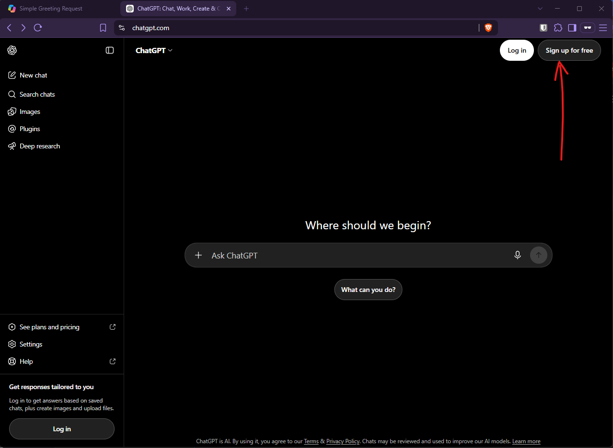
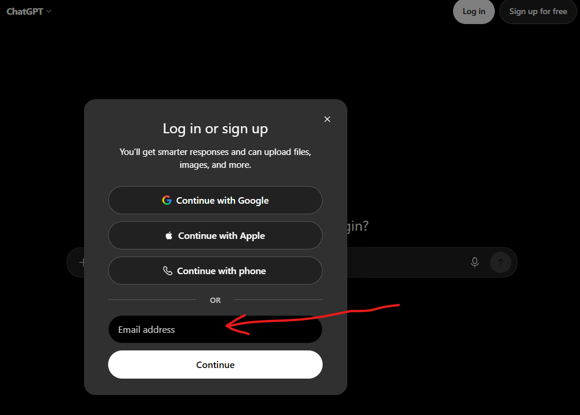
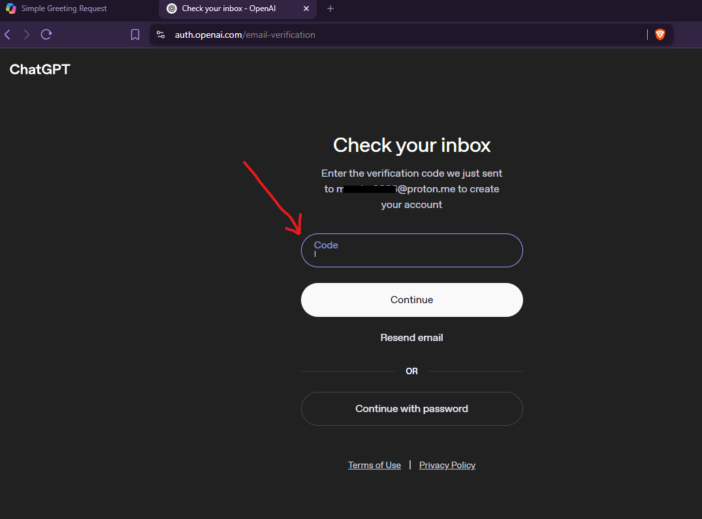
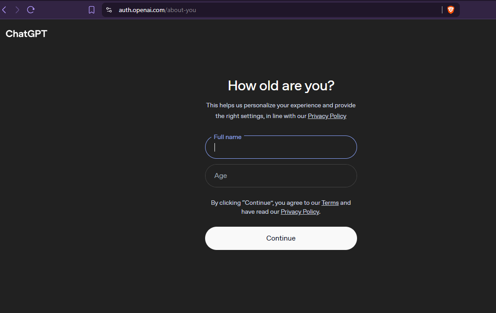
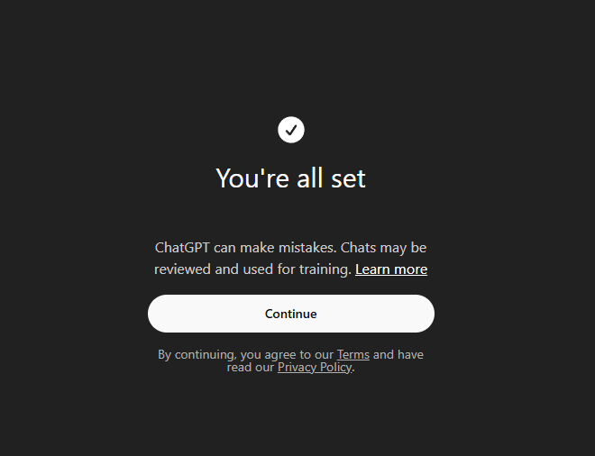
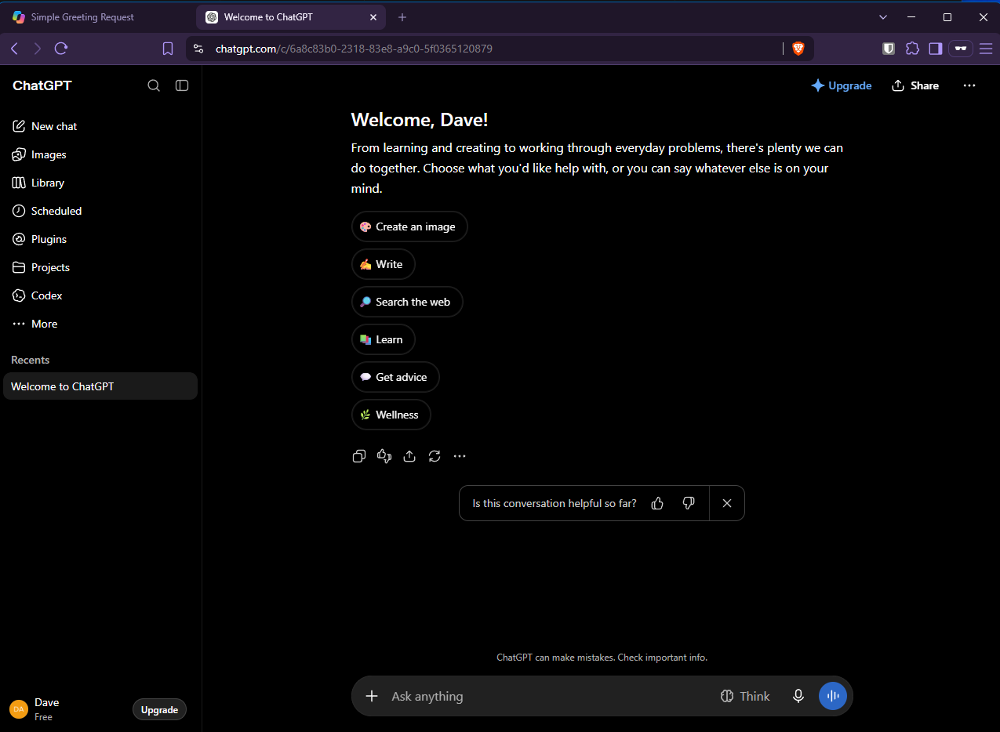

Accurate as of August 2026. AI tools change faster than a semester does. If what you see on screen doesn’t match this guide, trust the screen — and tell your instructor so it can be fixed. Noticing that gap is itself an AI-literacy skill.
1. What This Tool Is
What ChatGPT is — and why it’s worth being precise about it.
ChatGPT is OpenAI’s conversational AI assistant, and for most people it’s the product that made this whole category visible — which is exactly why it’s worth being precise about it rather than treating it as a synonym for “AI.” You talk to it in plain language: you type a question or a task, it answers, and you can keep the conversation going. In this course you’d use it the way you’d use any conversational assistant — to ask questions about material, draft and revise writing, and summarize documents.
ChatGPT is an app — the models it runs on are separate things with their own names, and most of what people call “what the AI can do” (web access, file upload, memory, image generation) are features of the app, not properties of the model. Module 3, Lesson 1 (M3L1) owns that distinction.
2. Getting Access
A personal account under OpenAI’s own terms — and what that means before you sign up.
This tool is not provided or supported by Mendocino College. Using it means creating a personal account under OpenAI’s own terms of service, with your own email — not your student email. Nothing in this course requires you to use it; every activity can be completed with a college-supported tool.
Before you sign up, know what you’re agreeing to: on a personal ChatGPT account, your conversations are used to train OpenAI’s models by default — OpenAI’s own wording is “When you use our services for individuals such as ChatGPT and Codex, we may use your content to train our models” (OpenAI Help Center, How your data is used to improve model performance, verified 2026-08-19). Section 6 shows where the setting to turn that off lives. Never enter your student ID, grades, other students’ work, anyone’s personal information, or anything you’d be uncomfortable seeing outside this course.
Step by step: signing up for ChatGPT
-
Go to ChatGPT on the web. Open
chatgpt.comin a browser tab. You can type into it straight away without an account — but it won’t remember anything from one session to the next. To sign up, choose Sign up for free.
Usable without an account — but it forgets you between sessions. -
Choose how to sign up. ChatGPT offers four options: Continue with Google, Continue with Apple, Continue with phone, or an email address. Use a personal email address — not your
@student.mendocino.eduone. A student address would create a personal OpenAI account that merely looks institutional.
Four ways in. “Continue with phone” is one option among four, not a requirement — signing up by email needed no phone number (checked 2026-08-24). -
Enter the code from your email. After you continue, ChatGPT shows a “Check your inbox” page asking for the verification code it just sent. Fetch the code from your email and type it into the box labelled Code.

A code goes to the address you entered. -
Give your full name and age. Next you’re asked for a Full name and an Age. This page also carries links to OpenAI’s privacy policy and terms — clicking Continue is you agreeing to them. That is the moment the vendor relationship described above becomes yours.

Continue here is the click that accepts OpenAI’s terms. -
Read the disclaimer page. ChatGPT then shows a short reminder that it can make mistakes, and that chats may be reviewed and used for training. That second sentence is the product telling you, at signup, what Section 6 covers in detail. It is easy to click past; don’t.

The training default, stated in-product, at the moment you sign up. -
You land in the chat interface. ChatGPT greets you by the name you gave and offers a starting menu — create an image, write, search the web, learn, get advice, wellness — alongside the input box. You can ignore the menu entirely and just type.

You’re in. The suggestion menu is optional — the input box is the whole tool. -
Test it. Type
Say helloand press Enter. If you get a response, you’re set.
Age
The signup form asks your age outright (step 4 above), but the number you type isn’t the end of it. ChatGPT is not open to all ages. OpenAI runs an age-prediction system that routes accounts it estimates to be under 18 into a restricted “ChatGPT for Teens” experience with content safeguards and some feature limits; the account stays active. An adult wrongly flagged verifies through Settings → Account → “Verify age,” handled by a third-party verification company that may ask for a live selfie or government-issued ID (OpenAI Help Center, Age prediction in ChatGPT, verified 2026-08-19).
Some students in this class are under 18, and dual-enrollment students routinely are. You do not need ChatGPT for anything in CSC 141. If you’re under 18, or you’d rather not hand a government ID to a third-party verification vendor to use a chatbot, use Gemini or Copilot — both are college-provided and cover every activity in the course.
3. The Interface
The screen you actually land on, at the depth this course needs.
This is a short tour of the screen a student actually lands on — enough to work the course activities, not an exhaustive feature tour. You’ll still see buttons for GPTs, Projects, Canvas and other features; naming them is fine, walking through them is out of scope here.
Your account information sits behind your login name in the lower left-hand corner — the same place Copilot puts it. What ChatGPT has no equivalent of is Copilot’s green shield: there is no on-screen indicator of how your data is being handled. That absence is why Section 6 sends you to a settings page instead of pointing at an icon.
Interface tour — seven things worth finding
We walk through the live interface together in class. This section names the parts so you know what you are looking at; the screens themselves are quicker to learn by being shown than by reading. The signup screens in Section 2 are captured because you go through those alone, before class.
The prompt input box
The single text field where you type what you want. Everything you do with ChatGPT starts here — you have already seen it, waiting for you, in step 6 of Getting access.
The conversation thread
Your prompts and ChatGPT’s responses in sequence. Everything above the current message is context the conversation still carries.
Starting a new chat vs. continuing one
Starting a new chat opens an empty thread with no memory of the previous one; continuing in the current thread keeps its context. When to do which is Activity 3 in Section 4.
Chat history
Previous conversations, listed and reachable again later. Temporary Chat is the exception — it never appears here.
The model selector
A control for choosing which model handles your conversation. Remember from Section 1: the app decides which model you get, and it can switch without you asking — a known quirk covered in Section 7.
Attaching a file or image
An attach control near the input box lets you add a document or image and then ask questions about it. The free tier limits this — see Section 5.
Where Temporary Chat lives
An icon at the top right of the chat screen starts a Temporary Chat — a conversation kept out of your history, out of memory, and out of model training. Section 6 explains what that means.
4. Core Workflow
Three short activities that exercise the interface. The same three appear in every tool guide, in the same order.
These prompts exist to make the buttons do something so you can see what happens. Writing good prompts is a separate skill, taught in Module 2, Lessons 3 and 4 (M2L3–M2L4).
Task: ask one question, then ask a second question that only makes sense if the first one is remembered.
- Open a new chat and paste the first prompt.
- Read the response.
- In the same thread, paste the follow-up. Don’t repeat the topic — the point is to see whether the thread carries it.
First prompt:
Explain what a community college transfer agreement is, in about four sentences.
Follow-up, in the same thread:
Now say that again for someone who has never heard the word "articulation."
Task: upload a document or image and ask a question about it.
- Find a file you already have — a syllabus, a handout, a photo of a printed page. Nothing personal: no student ID, no grades, nobody else’s work.
- Use the attach control near the input box to add it.
- Paste the prompt below and send it.
Prompt:
Summarize this document in five bullet points, then list anything in it you are unsure about.
The free tier limits messages with uploads; how limited isn’t published — see Section 5.
Task: notice the difference between continuing a thread and starting a new one.
- Still in the thread from Activity 2, paste the prompt below. The answer will probably still be coloured by the document you attached.
- Now start a new chat and paste the same prompt into the empty thread.
- Compare. A long thread carries everything in it — useful when that’s what you want, and a source of drift when it isn’t. When you change topic, start clean.
Prompt (run it twice — old thread, then new chat):
What are three good ways to take notes during a lecture?
The stronger version of starting clean is Temporary Chat — a conversation that never enters your history at all. Section 6 covers it.
5. Free-Tier Limits
What the free tier gets you — and where OpenAI stops being specific.
This section is accurate as of August 2026, verified against OpenAI’s published pricing page on 2026-08-19. It is the fastest-staling section in the guide — re-verify it every term, and check it against your own screen before relying on it.
Model access on Free: GPT-5.6 Luna as the primary model, plus GPT-5 Thinking Mini.
Text chats: OpenAI describes Free as “unlimited text chats with GPT-5.6 Luna,” qualified as “subject to abuse guardrails.”
Limited on Free: messages with uploads; image generation (also described as slower); voice chats; deep research; data analysis and vision; and “limited memory and context.”
Available on Free: unlimited chat history; web, iOS and Android; using GPTs others have made (but not creating or sharing them); Study mode.
All of the above: OpenAI’s pricing page, verified 2026-08-19.
“Unlimited” and “limited” are doing a lot of work in that list, and OpenAI doesn’t publish the actual numbers behind “limited.” The honest answer to “how many images can I generate?” is that OpenAI doesn’t say — you find out when it stops. Noticing that a vendor’s plan page describes caps without stating them is itself the skill this course is about.
6. Privacy & Data Handling
What OpenAI does with what you type, and how to check it yourself.
Data posture at a glance
- Account
- Personal account under OpenAI’s own terms. No college agreement applies to it.
- Training on your inputs
- On by default. You can turn it off; it is not already off for you. OpenAI Help Center, verified 2026-08-19
- Who else can see it
- OpenAI, per its own policy. There is no institution in between and nobody at the college to ask.
- Retention
- Temporary Chat is excluded from history, memory and training; Temporary Chats are deleted from OpenAI’s systems after 30 days. OpenAI does not publish a retention period for ordinary deleted conversations. OpenAI Help Center, Data Controls FAQ, verified 2026-08-19
The detail
- Training is on by default on personal accounts. OpenAI: “When you use our services for individuals such as ChatGPT and Codex, we may use your content to train our models.” (OpenAI Help Center, How your data is used to improve model performance, verified 2026-08-19.)
- How to turn it off. In ChatGPT, open Settings → Data Controls and find the toggle labelled “Improve the model for everyone” — turning it off stops your new conversations being used for training. You can also opt out through OpenAI’s privacy portal by selecting “do not train on my content.” The menu moves, so if you can’t find it where this guide says, look for a setting about improving or training the model — what it does matters more than where it sits.
- Temporary Chat. OpenAI: chats from Temporary Chat “won’t appear in history, use or create memories, or be used to train our models.” It’s reached from the icon at the top right of the chat screen. This is the fastest privacy control in the product, and worth naming explicitly.
- What deleting does and doesn’t do. Deleting a conversation removes it from your history. What happens to it after that, OpenAI doesn’t say: the model-training article states no retention periods, and the Data Controls FAQ (verified 2026-08-19) does not publish a retention window for ordinary deleted conversations. Temporary Chats are the exception to all of it — they never enter history, memory, or training in the first place.
The in-product check. Open Settings → Data Controls on your own account and read what the training setting is actually set to right now. Copilot shows you a shield; here you have to go and look. Do that before you put anything into it that you’d mind seeing again.
The standing rule, whatever tool you’re using: never enter your student ID, grades, other students’ work, or anyone’s personal information.
With a college account on Copilot or Gemini, the vendor commits not to train on your data and the college is party to the arrangement; here, training is on until you turn it off and there is no institution in between.
- Your Data and Your Account — how this compares to the other tools in the course.
- Module 1, Lesson 5 (M1L5) — why any of it matters.
Sources: OpenAI Help Center — How your data is used to improve model performance; Data Controls FAQ. Both verified 2026-08-19.
7. Known Weaknesses
The failure modes you will actually hit in this course.
- Confident wrong answers, stated in the same tone as correct ones.
- Fabricated or mismatched citations — invented sources, and real links that don’t support the claim attached to them. Module 3, Lesson 1 (M3L1) examines this closely.
- Inconsistency — the same prompt twice, two materially different answers.
- Staleness, and answers that blend freshly retrieved material with older material without flagging which is which.
- Sycophancy — it tends to agree with a premise you hand it. Pushing back on your own prompt is a useful habit; try asking the same question with the opposite assumption baked in.
- Free-tier model switching — the answer quality you get can change without you doing anything differently, because the app decides which model handles a request.
One phrasing note that matters for the rest of the course: where retrieved web content is involved, it’s a product behaviour, never a model behaviour — “the app searched and gave the model the results,” not “the model searched the web.” M3L1 owns that distinction.
8. Where to Go Deeper
OpenAI’s own documentation, and the lessons that own the concepts this guide only points at.
OpenAI’s own help documentation
- OpenAI Help Center — How your data is used to improve model performance — the source for the training default and Temporary Chat. Verified 2026-08-19.
- OpenAI Help Center — Data Controls FAQ — the source for the settings and retention. Verified 2026-08-19.
The lessons that own these concepts
- M1L2 — what AI and machine learning actually are.
- M2L1 — generative AI.
- M2L3–M2L4 — prompting.
- M3L1 — research use, verification, and the model-vs-product distinction.
- M1L4 and M1L5 — bias and privacy.
Elsewhere in the tool guides
- Gemini — the course baseline tool.
- Your Data and Your Account — the cross-tool comparison.
- Other guides: Copilot · Claude.